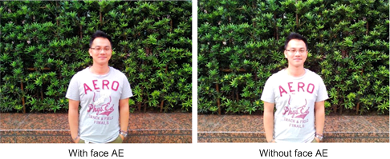
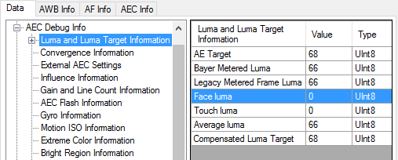
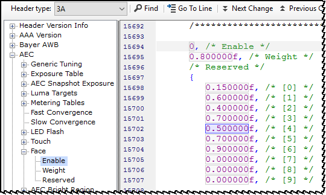
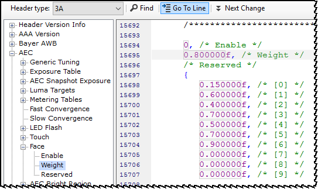

A higher face luma weight value can improve face brightness, but the side effect is
that AE may become more unstable when detecting a face.

-
Capture test images with 3A EXIF information and AEC log messages.
-
Select and open the image in the Image Viewer.
-
In the 3A Debug dialog box, click the
Data tab and select .
-
Check the Face luma parameter. A value of 0 indicates
that face AE is disabled.

-
Tune face AE.
-
On the AEC Fine Tuning tab, click Edit
Header.
-
Select Header type: 3A and navigate to and verify that the value is 1 (enabled).

-
If the issue persists when AE is enabled, add more weight for face metering
(increase by 0.05 for each trial). Select Header type: 3A
and navigate to

-
In the lab, capture an image with a face and black background to use for
verifying the results.